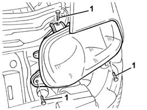
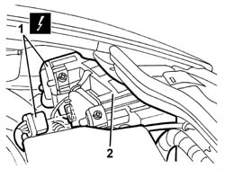

5540B76 Front LIGHT CLUSTER with fog light (one), left or right - R.R. with interfering components removed
- Path
- Procedures > 55 ELECTRICAL EQUIPMENT > 5540 EXTERIOR LIGHTING > 5540B headlamps > 5540B76 Front LIGHT CLUSTER with fog light (one), left or right - R.R. with interfering components removed
- Kind
- repair procedure (removal / refitting; the operation number is the code)
- Applies to
- all engines; all production periods
- Interactive page
- https://sloeber94.github.io/elrnDB-a147/en/#/3025556
Applies to: engines: 1.9 JTD 16V; all production periods
 Removing
Removing
 Refitting
RefittingApplies to: engines: 1.9 JTD 16V; all production periods
1. Undo the bolts fixing the light cluster.

Applies to: engines: 1.9 JTD 16V; all production periods
1. Move the light cluster slightly and disconnect the electrical connection.
 | Name | Connector |
|---|---|---|
1 | Left headlamp |
| Name | Connector |
|---|---|---|
1 | Right headlamp |
2. Recover the light cluster.

Applies to: all engines; all production periods
Refitting
RemovingCheck that the light cluster is not damaged.
Connect the electrical connection.
Position the light cluster.
Tighten the bolts fixing the light cluster.
Applies to: engines: 1.9 JTD 16V; all production periods
Topics linked from this page (4)
- 7025A12 Engine front sound insulation COVER - R.R.
- 7025A14 Bonnet LID - R.R.
- F10 Left headlamp
- F11 Right headlamp
Topics that link to this page (23)
- 1004B10 power unit with manual gearbox - r + r
- 1016D20 left cylinder head - r + r and replace gasket
- 1016D24 right cylinder head - r + r and replace gasket
- 1020D38 flywheel side oil seal - replace
- 1020D51 crank shaft rear mount - apply silicone to mating surfaces
- 1024B10 engine flywheel - r + r for versions with manual gearbox
- 1080B39 right catalytic preconverter r r or replace cylinder head gasket
- 1084B34 cartridge engine oil filter support - r + r
- 1088B20 engine cooling radiator - r + r
- 1088E11 fans with single engine duct - r+r
- 1810A20 clutch - r + r
- 1820A24 thrust bearing linkage - r + r
- 2110A10 manual gearbox and differential - r + r
- 2110C22 gear input shaft seals - r r
- 2710A35 intermediate drive shaft mount - r r
- 3340B56 RIGID PIPE from hydraulic CONTROL UNIT to RIGHT FRONT BRAKE - R.R.
- 5040A64 pipe from evaporator to dehydrating filter/accumulator - r+r
- 5505C28 intergrated engine bay and abs system wiring - r r
- 5530A10 alternator - r+r
- 5540B74 Left front LIGHT CLUSTER with fog light - R.R.
- 5540B75 Right front LIGHT CLUSTER with fog light - R.R .
- 5540C24 motor (one) for l/h or r/h headlamp/light cluster alignment correction - r+r
- 5540D14 l/h or r/h fog lamp bulb (one) - r+r